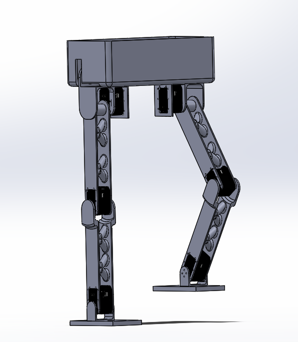
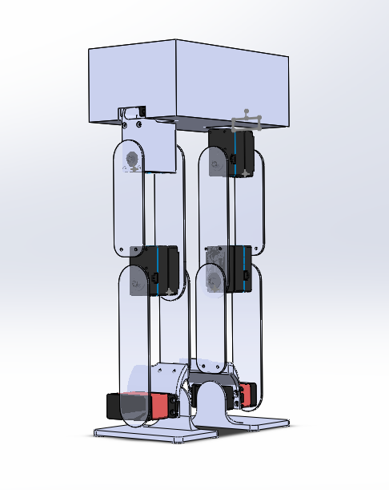
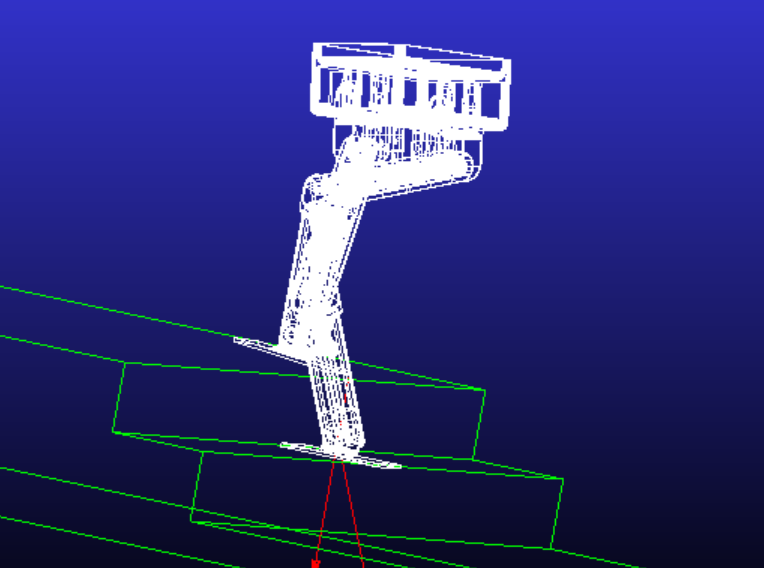
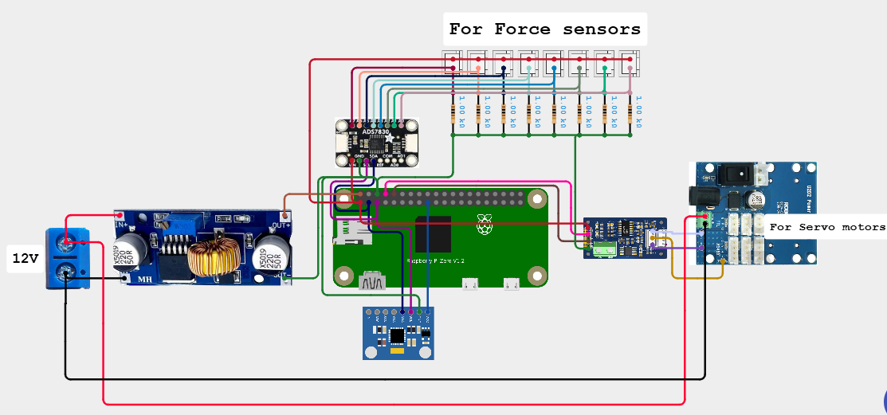
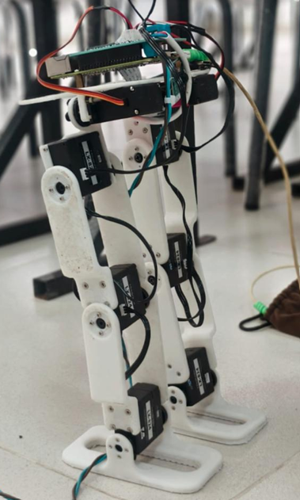

The Bipedal Robot project focuses on the design and development of a two-legged robotic platform capable of achieving stable locomotion, maintaining balance, climbing stairs, and transporting small payloads. The project combines mechanical design, kinematic and dynamic analysis, control systems, embedded electronics, and sensor integration to emulate human walking behavior. The robot was developed as a multidisciplinary mechatronics project involving simulation, structural analysis, actuator selection, and motion control.
Most mobile robots rely on wheels for movement, which limits their ability to navigate environments designed for humans. Bipedal robots can traverse stairs, uneven surfaces, and confined spaces more effectively. However, maintaining balance and generating stable walking motions present significant engineering challenges. The goal of this project was to design a robotic system capable of walking stably while carrying loads and adapting to real-world terrain conditions.
Each leg consists of four degrees of freedom, including two hip joints, one knee joint, and one ankle joint. Link dimensions were determined through torque analysis and optimized to satisfy the required walking and stair-climbing constraints. Structural components were designed using CAD software and validated through Finite Element Analysis (FEA) to ensure adequate strength while minimizing weight.
Forward and inverse kinematic models were developed to calculate joint motions required for desired foot trajectories. Dynamic analysis was performed using MATLAB to evaluate joint torques during walking operations. The resulting torque profiles were used to select appropriate actuators capable of delivering the required performance.
The walking controller is based on the inverted pendulum model, which provides a simplified representation of bipedal locomotion. Gait planning, inverse kinematics, and actuator control are arranged in a hierarchical control structure. Stability is monitored using the Zero Moment Point (ZMP) criterion, ensuring that the robot remains balanced throughout the walking cycle.
The project successfully demonstrated the integration of mechanical design, robot dynamics, embedded systems, and control engineering within a humanoid robotic platform. The developed system validated key principles required for stable bipedal locomotion and provided a foundation for future research in humanoid robotics, service robots, and autonomous mobility systems.




